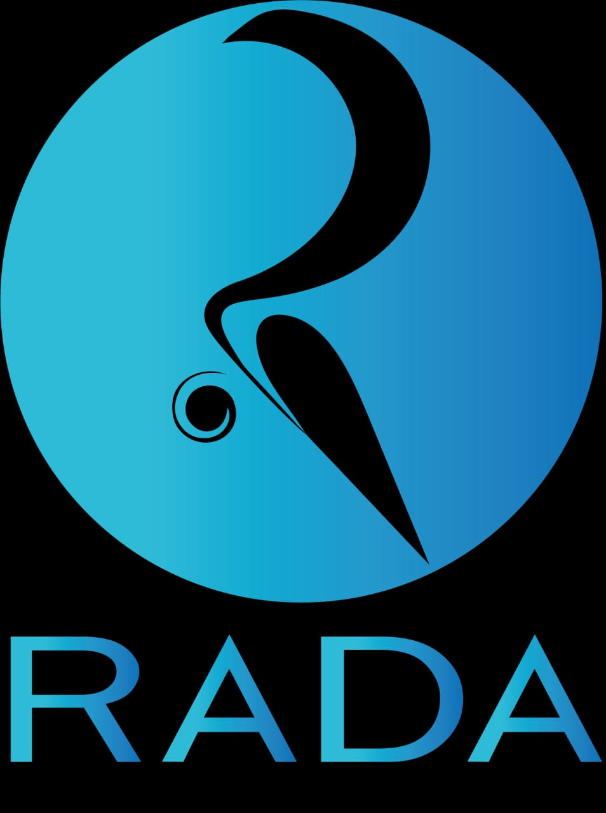

"Hello! It is Here Again"
NAIROBI INNOVATION WEEK EDITION 3 2022
An Interactive session about innovation in Kenya and Africa brought to you by the University of Naorobi. This is to promote advanced changes in our continent.
2022.04.26(WED) - 28(FRI)
© University of Nairobi, Great Court Main Campue
Nairobi Innovation Week 2022 Logo
The logo for the 2022 Nairobi Innovation week was decided through the logo competition from 1 April to 10.April by the students of the University.After Online pulic voting ad Selection Committee process, the logo from Peter Nguka won the prize.After consultation with Mr Nguka we optimized the prize winning-logo for this year's conference.

Nairobi Innovation Week
See the past Nairobi Innovation Week
Take a look at the last two events which took place iin Kisumu and Mombasa respectively.